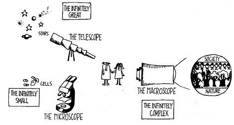

THE
MACROSCOPE: A NEW WORLD SCIENTIFIC SYSTEM.
de Rosnay,
Joël
Microscopio,
telescopio: estas palabras evocan los grandes avances
científicos en la exploración de lo infinitamente
pequeño y lo infinitamente grande. El microscopio ha permitido
una inmersión vertiginosa en las profundidades de la materia
viva, haciendo posible el descubrimiento de la célula, los
microbios y los virus, y ha impulsado el desarrollo de la
biología y la medicina. El telescopio, por su parte, ha
abierto nuestras mentes a la inmensidad del cosmos, ha seguido la
trayectoria de planetas y estrellas, y ha preparado a la humanidad
para la conquista del espacio.
Hoy nos enfrentamos
a otro infinito: lo infinitamente complejo. Nos sentimos
desconcertados por el número y la variedad de elementos,
relaciones, interacciones y combinaciones que sustentan los grandes
sistemas. Nosotros mismos somos una pequeña parte de estos
sistemas, somos como células dentro de ellos, y nos confunde
la interdependencia y el dinamismo de los mismos, que se
transforman en el mismo instante en que los estudiamos. Debemos ser
capaces de comprenderlos mejor para poder orientarlos
adecuadamente. Sin embargo, esta vez no contamos con instrumentos
para ello. Sólo disponemos de nuestro cerebro, nuestra
inteligencia y nuestra razón para enfrentarnos a la inmensa
complejidad de la vida y la sociedad. Es cierto que la computadora
es una herramienta indispensable, pero no es más que un
catalizador, una herramienta sumamente necesaria, pero insuficiente
por sí sola.
Por lo tanto,
necesitamos un nuevo instrumento. El microscopio y el telescopio
han sido valiosos en la recolección de conocimientos
científicos sobre el universo. Ahora, se requiere una nueva
herramienta para todos aquellos que buscan entender y dirigir
eficazmente sus acciones en este mundo, ya sean responsables de
decisiones importantes en la política, la ciencia o la
industria, o personas comunes como nosotros.
Voy a llamar a este
instrumento "el macroscopio"" (de "macro", grande, y "skopein",
observar).
El macroscopio es
diferente a otras herramientas. Se trata de un instrumento
simbólico, compuesto por una serie de métodos y
técnicas provenientes de diversas disciplinas. Sería
inútil buscarlo en laboratorios y centros de
investigación; sin embargo, innumerables personas lo utilizan
hoy en día en los más variados campos. El macroscopio
puede considerarse el símbolo de una nueva forma de ver,
comprender y actuar.

Usemos el
macroscopio para dirigir una nueva mirada a la naturaleza , la
sociedad y el hombre y para tratar de identificar las nuevas reglas
de la educación y la acción. En su campo de visión
organizaciones , eventos y evoluciones son iluminados por una luz
totalmente diferente. El macroscopio filtra detalles y amplifica
los enlaces que unen las cosas. No se utiliza para hacer las cosas
más grandes o más pequeñas, sino para observar lo
que es a la vez demasiado grande, demasiado lento y demasiado
complejo para nuestros ojos (la sociedad humana, por ejemplo, es un
organismo gigantesco que es totalmente invisible para nosotros).
Anteriormente , en el intento de comprender un sistema complejo ,
buscamos las unidades más simples que explican la materia y la
vida: la molécula, átomo, las partículas
elementales. Hoy en día, en relación con la sociedad,
nosotros somos las partículas. Esta vez nuestra mirada debe
estar dirigida a los sistemas que nos rodean con el fin de entender
mejor antes de que los efectos sean irreversibles. Los papeles se
invierten: ya no es el biólogo que observa una célula
viva a través de un microscopio, es la propia célula que
observa en el macroscopio el organismo que los cobija.
This work was first
published in France under the title Le Macroscope. Vers une vision
globale. © Editions du Seuil, 1975.
THE MACROSCOPE: A
NEW WORLD SCIENTIFIC SYSTEM. English translation copyright ©
1979 by Harper & Row, Publishers, Inc. All rights reserved.
Printed in the United States of America. No part of this book may
be used or reproduced in any manner whatsoever without written
permission except in the case of brief quotations embodied in
critical articles and reviews. For information address Harper &
Row, Publishers, Inc., 10 East 53rd Street, New York, NY. 10022
Published simultaneously in Canada by Fitzhenry & Whiteside
Limited, Toronto
FIRST
EDITION
Designed by Janice
Stern
Library of Congress
Cataloging in Publication Data
The
macroscope.
Translation of Le
macroscope.
Bibliography:
p.
Includes
index.
1. Social systems.
2 System theory 3 Energy policy. 4. Communication. 5. Time. 1.
Title.
H61.R6813 301.1
76-5122
ISBN
0-06-011029-5